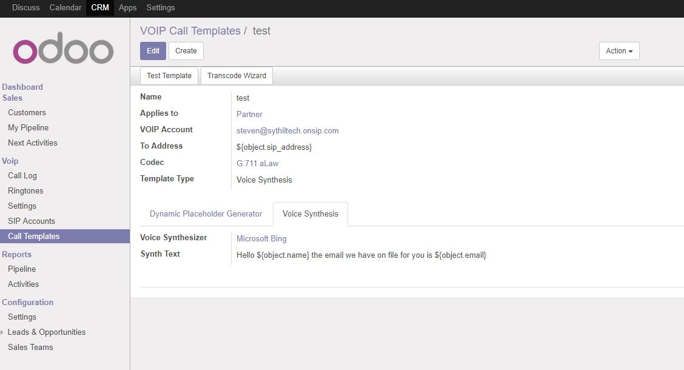

Description
Make video calls with other users within your system
*IMPORTANT* camera access requires https for Google Chrome web browser
Instructions
1. Click on the phone icon in the top right hand corner
2. You can select between making a video call, audio only call or screensharing
3. The other user will receive a notification to answer the call
4. Both users have to accept access to camera/audio
5. Once both users have accepted media access the call will begin

Custom Ringtones
1. Go to CRM -> Voip -> Ringtones
2. Upload an mp3 and give the ringtone a name
3. Go to CRM -> Voip -> Settings and change the default ringtone
Instant Messaging
1. Setup a SIP account under CRM->VOIP->SIP Accounts
2. Go to a user and assign them to the SIP account Settings->Users->Users->VOIP->SIP Account
3. Open a contact / customer / supplier
4. Click the chat icon next to SIP address
5. Type a message and hit send

Automated SIP Calling
1. Setup a SIP account under CRM->VOIP->SIP Accounts
2. Setup a call template under CRM->VOIP->VOIP Call Templates, you can use dynamic placeholders for the to address
3. Upload an audio file to the template, it must match the selected codec or you can setup the transcode module so you can just upload mp3s
4. Create a new server action under Settings->Technicial->Actions->Server Actions, be sure to select make voip call as the action to do
5. Create a new automated action under Settings->Technicial->Automation->Automated Actions, be sure to select the server action created earlier
6. Create a new record, the module should work with leads, partner, employees or any other models

Future features
1. File sharing
2. Advanced Screen sharing
3. Automatic transibing of phone calls
5. Trunking into the PSTN network to send sms/mms and telephone calls
6. Message bank
Ringtone courtesy of zedge.net
Find a bug? feature idea? send an email to steven@sythiltech.com.au